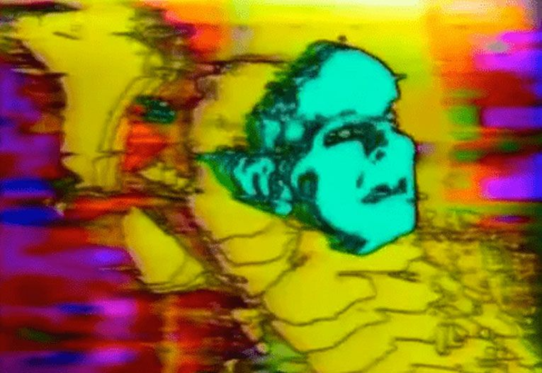
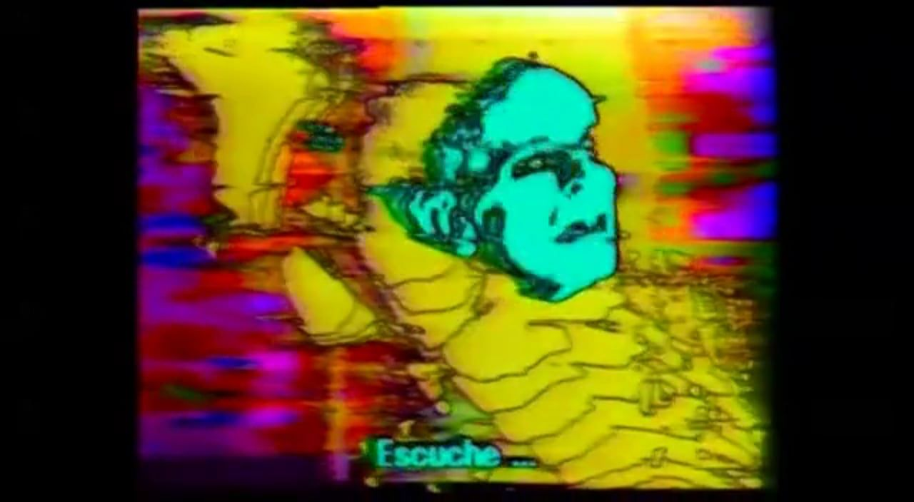

Pre-pixel Symphony in Major Fractal I

Closed Circuit: Pre-pixel symphony in major fractal I (2014)
In closed circuits, vitality is a pathology, a chain reaction?
"Prepixel Symphony in Fractal Major I", is part of a series of analog live interventions on classic films in VHS format.
In this case about Nosferatu. Vampire of the Night (1979) by Werner Herzog, which in turn is a review of Nosferatu. A Symphony of Horror (1922) by F.W. Murnau
Performance / VHS / Electronic Music VHS feedback, Found footage. Length 6,20"
The song of the rooster: Pre-pixel symphony in major fractal I (2014)
What happens to the body when it is altered recursively, not as a form but as a formula?
"The song of the rooster", is part of a series of analog live interventions on classic films in VHS format.
Performance / VHS / Electronic Music VHS feedback, Found footage. Length 7,47"

Exhibitions
- Contemporary Video Art Exhibition. Museums Night. Paco Urondo Cultural Center, Buenos Aires, Argentina, 2016.